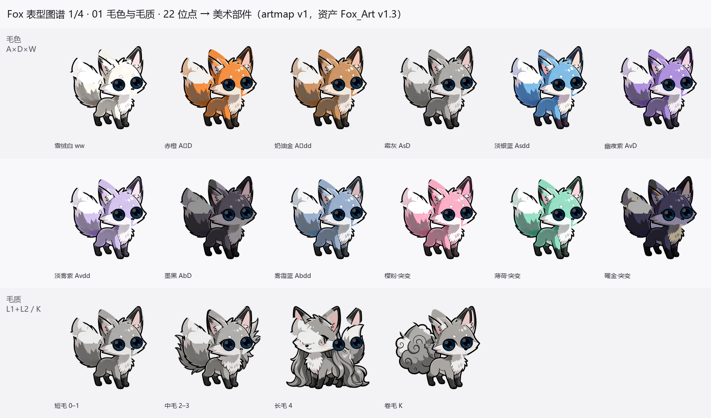
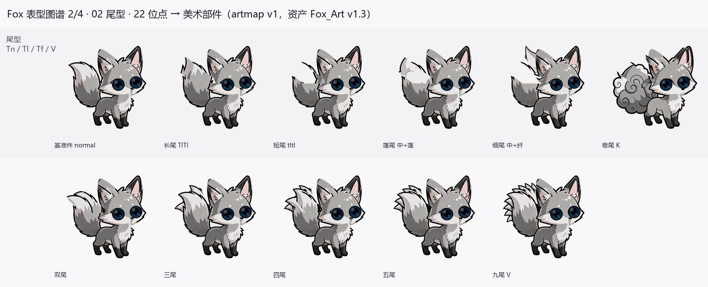
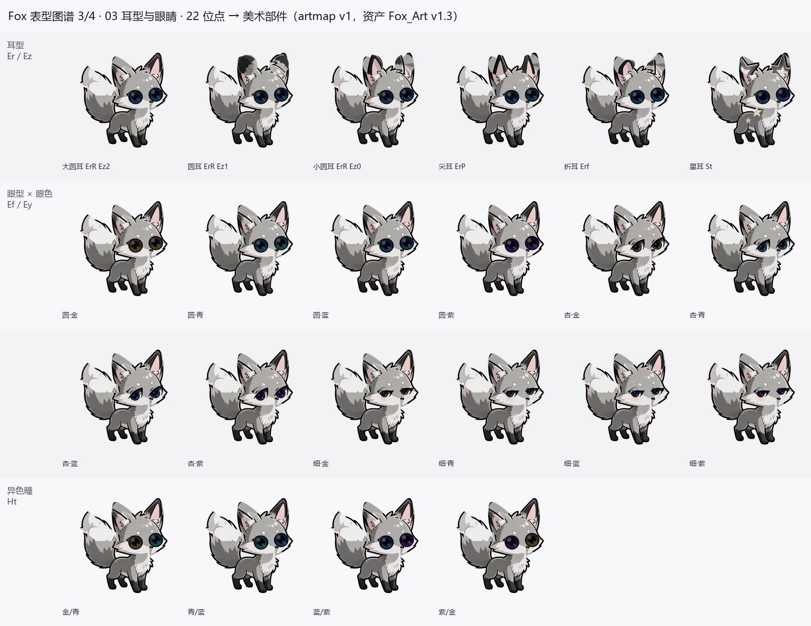
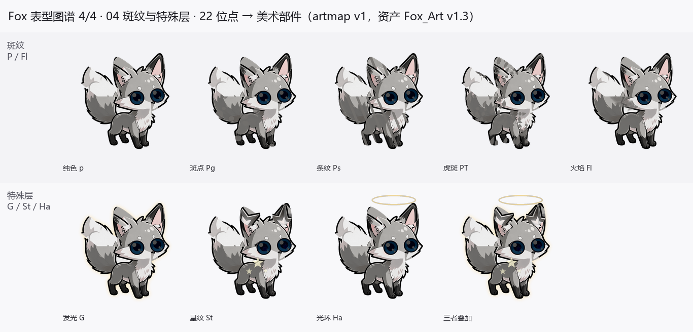
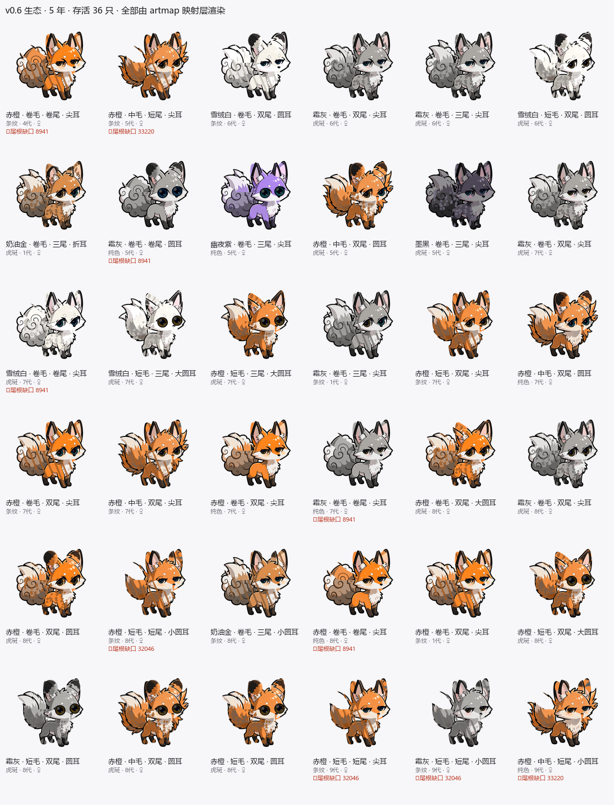

sim/artmap.py · 自检 69 项全通过 · 2026-11-01
22 个位点全部有了可执行出口，真实种群 36 只**一次渲染成功、零碎片零出血**。 过程中修掉三个会让功能直接失效的集成缺陷，其中一个是 「所有长毛/中毛/卷毛狐狸都会变成霜蓝色」——不修的话 L1/L2、K 三个位点等于白设计。
to_art() 除了部件名，还返回 notes（降级与覆盖说明）和
missing（无素材支撑的位点）。任何映射损失都留痕，不静默丢弃——
这是后面能一口气找出 6 个美术缺陷的前提。
美术侧组装器在 fur != 'short' 时直接取
fox_fur_<fur>_blue_q4 母版，把 coat 参数完全丢弃。
实测 orange + long 的核心平均 RGB 是 (104, 133, 158) 蓝灰。
也就是：只要狐狸不是短毛，毛色基因就完全失效。L1、L2、K 三个位点白设计。
修法是先按 blue 切核心、再用 LOCK-F 的 recolor_coat 换色——
实测色相偏差均值 0.006（0 = 完全一致），肉眼无差。
traits.json 声明眼型有 eye_narrow，但素材目录里
从来没有这个文件——实际是 eye_sleepy（细长困眼）。
映射层做别名处理。
声明值 fur_medium，母版文件名是
fox_fur_mid_blue_q4。映射用 mid，
输出面板值时再拼回 fur_medium。
把映射层的每一个出口都渲染出来，用来验收「位点取值 → 部件」是否一一对应。


normal 是美术基准件，没有基因出口。


special_glow / special_aura / special_star_mark 三个值但没有交付任何素材，
发光 / 光环 / 星纹三层由程序化合成兜底（光环位置按耳顶 y=166 实测校准）。
花纹这里是全篇最弱的一环：遮罩本身在躯干只覆盖 22%（spots 只有 9%），
在 128–256px 的桌宠尺寸上只剩一层淡淡纹理。已加自适应对比度补偿
（保证花纹与底色亮度差 ≥ 48），但覆盖率是美术遮罩的问题，得靠补素材解决。

tail_short / tail_thin
的已知缺陷（见第 6 节 A2）。
36 只里一半以上是「卷毛 + 双尾 + 尖耳 + 赤橙」。量化后（12 种子 × 5 年，只统计不渲染）：
| 方案 | 唯一外观 | 毛色熵 | 毛质熵 | 尾型熵 | 耳型熵 | 近交 F |
|---|---|---|---|---|---|---|
| 基线 v0.6 | 27.4 | 2.04 | 1.36 | 2.33 | 1.37 | 0.082 |
| 只把 K 从 0.30 降到 0.12 | 27.5 | 2.04 | 1.65 | 2.38 | 1.37 | 0.082 |
| 只改 K + Er 均分 | 29.8 | 1.92 | 1.65 | 2.63 | 1.76 | 0.130 |
| 只改 A/D（稀释增多） | 27.0 | 2.49 | 1.41 | 2.34 | 1.67 | 0.105 |
| 全改 | 30.8 | 2.72 | 1.62 | 2.36 | 1.92 | 0.132 |
调 K 频率是零代价的：12 个种子的逐种子 F 值完全相同 （0.06 0.09 0.10 0.03 0.14 0.04 0.09 0.12 0.08 0.10 0.07 0.07）—— 证明 K 位点与适应度完全解耦，只影响观感。毛质熵 1.36 → 1.65（+21%）。
其余位点（Er、A、D）参与适应度，改动会把近交 F 从 0.082 抬到 0.13（+59%）， 属「多样性与遗传健康」的权衡项。建议只采纳 K 这一条，其余留作可选难度。
| 段 | 内容 | 结果 |
|---|---|---|
| A 表型层逐维穷举 | 22 位点每个可取值都能映射到合法部件，且素材文件确实存在 | 47 项 ✓ |
| A10 / A11 值域对账 | 432 组交叉组合输出值可解析；素材 vs 机读数据全量对账 | 3 项 ✓ |
| D 换色保真 | 4 毛色 × 3 非短毛，色相与同色短毛一致（均值 Δ = 0.006） | 13 项 ✓ |
| B/C 整链渲染 | 16 组随机表型：主体最大岛占比最低 100%、0 组出血 | 6 项 ✓ |
按严重度排序，全部有量化依据，可直接转成 v1.4 修单。
| # | 问题 | 证据 |
|---|---|---|
| A1 | ear_large 的内容比 ear_small 还小 2.7 倍 | large 内容 124×100 / 6054 px，small 128×166 / 16344 px； large 的 topY=235 而其他都是 169。「大圆耳」视觉上最小，Er/Ez 语义反转。 v1.2 起就是这样，v1.3 未修。 |
| A2 | 尾根缺口：thin 35743 px、short 32043 px | 「母版轮廓内、组装后却透明」的严格判据。thin 是 Tf 的纤态， 出现率约 25%，不修则该性状不可用。 |
| A3 | traits.json 的 values 漏登记 4 项 | coat 缺 mist_purple / haze_blue（colorways 有 12 色，values 只列 10）； eyeColor 缺 eye_cyan；eyeShape 写 eye_narrow 但素材是 eye_sleepy； fur 写 fur_medium 但文件是 fur_mid。 |
| A4 | 花纹遮罩覆盖率偏低 | stripes / tabby 在躯干只覆盖 22%，spots 仅 9%。 128–256px 桌宠尺寸下花纹只剩淡淡纹理。 |
| A5 | 三个 special 值声明未交付 | traits.json 有 special_glow / special_aura / special_star_mark， assets/master 下无任何对应文件。已用程序化合成兜底。 |
| A6 | run_assemble.ORIG_EAR_H 未定义 | 第 219 行引用，全文件无赋值。一旦走到 legacy 耳朵分支 （非 1024 画布件）就 NameError，目前被「全部 1024 对齐」掩盖。 |
| 文件 | 作用 |
|---|---|
sim/artmap.py | 映射层本体（to_art / render / render_geno） |
sim/verify_artmap.py | 69 项自检 |
sim/render_population.py | 真实种群批量渲染 + 拼版图 |
sim/render_atlas.py | 表型图谱（4 页） |
sim/diversity.py | 外观多样性诊断 |
docs/artmap-spec-v1.md | 映射规范（完整表格 + 缺口记录） |
环境：必须用系统 Python 3.10（E:/SoftWare/python3.10/python.exe），
托管 3.13 缺 pillow / numpy / scipy。
资产目录按版本号自然排序取最新，可用 FOX_ART_ROOT 覆盖。
不修改 Fox_Art/tools/ 下任何文件，全部用包装 + 运行时补丁，
美术升级不会冲突。